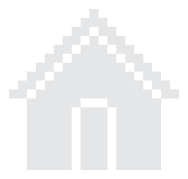

<section class="tile">
    <section class="top-flex">
        <section class="statistic">
            <p class="statistics-text">Lives: {{ lives }}</p>
            <p class="statistics-text">Score: {{ score.toFixed(0) }}</p>
            <p class="statistics-text">Multiplier: {{ scoreMultiplier.toFixed(2) }}</p>
        </section>

        <section class="restart-home">
            <button (click)="onClickRestart()"></button>
            <button (click)="onClickHome()"></button>
        </section>
    </section>

    <section class="draw-container">
        <h1 class="draw-country">Draw {{ countries[randomCountryIndex].name }}</h1>
        <section class="form-padding">
            <form #form id="form" action="" ng-controller="ExampleController">
                <section *ngFor="let tile of tiles" class="tile-outer">
                    <input type="checkbox" id="Placeholder" (change)="updateReplayTiles()"
                        [ngClass]="['display-none', 'tile-checkbox']">
                    <label for="Placeholder" class="tile-inner"></label>
                </section>
            </form>
        </section>
        <app-button-component [color]="'blue'" [label]="'Confirm'" (onClick)="onCheckConfirm()"></app-button-component>
    </section>
    <div #snackbar id="snackbar"></div>
</section>